Tip: To make it easier to find the procedures you need, the procedures are collapsed. If you want to expand a procedure, click the triangle next to the procedure title to open and close the detailed
Applies To:
1. Select a Case and Review Pass
4. View Persistent Highlighted Key Words
8. Apply Tags
This topic contains high-level procedures to help you prepare for .<document review>.
Document review consists of selecting the case, opening the desired review pass, working with the different document view tabs (search, apply pre-defined redactions, highlight, add comments, view metadata, etc.), viewing relationships (family, email threads, etc.), populating/modifying coding forms, assigning tags, and setting the review status.
The following illustration shows the basic review document tasks. The numbers correspond to the procedures later in this topic.
<INSERT WORKFLOW IMAGE
<This is just a sample image. I have blocked it from publication in builds. Where possible, we will leave these images at regular size. If we must, we'll put them in a thumbnail. I'm displaying this image, in particular, because I'd like us to follow a standard workflow design. It would be something similar to this design.>
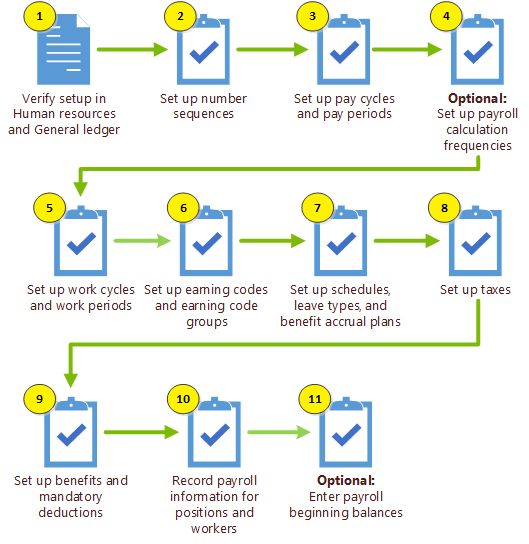
Basic steps for setting up and conducting <Document Review for the first time.
This topic describes functionality that is available only if the tasks are completed as described in the Review the Prerequisites below.
|
|
Tip: To make it easier to find the procedures you need, the procedures are collapsed. If you want to expand a procedure, click the triangle next to the procedure title to open and close the detailed |
The following table shows the prerequisites that must be in place before you start to review documents.
|
Task |
Notes |
Links |
|---|---|---|
|
Create Users |
Under |
|
|
Create New Groups |
Under |
|
|
Create Managing Clients and Clients> |
Under Case Management, the |
|
|
Create Cases |
Under Case Management, one or more cases may be added for a Client. Once the |
|
|
Assign Security Groups |
Under Case Management, the |
|
|
Create Permission Templates |
Under Case Management, the |
|
|
Create Review Passes and Batches |
The |
Before you use conduct a document review for the first time, certain tasks must already be done in
|
|
Important: Reviewing documents is permission based. If you do not have permissions to review documents, see your |
.
Click ECA & Review
on the
Click the case’s card. Cases are displayed alphabetically. Only those cases permissioned to a user are displayed. Inactive case cards are muted gray and are grouped alphabetically after the active case cards.
Under Recent in the left pane, select the case. The Recent list displays the last 5 accessed cases. Note: If the status for a case is changed to inactive or user permissions for the case are removed, it is automatically removed from the Recent Case list.
Under Favorites in the left pane, select the case. The list is sorted chronologically; displaying the most recently accessed cases at the beginning of the list.
Enter the case or client name in the Search field. Cases under Favorites and Recent are not impacted by the search function to filter cases.
The Funnel graph and Review Passes appear for the selected case.
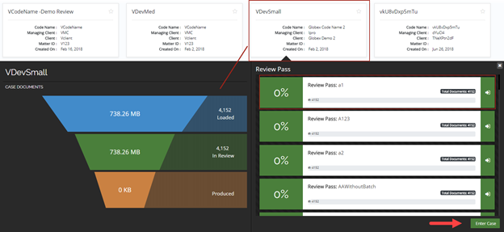
The Funnel graph depicts the number of case documents that are loaded, in review, and produced. Each Review Pass depicts the percentage of documents reviewed, a progress bar, the review pass name, and the total number of documents.
Note: To close the funnel graph, click  in the upper right corner.
in the upper right corner.
Each document view tab has an associated toolbar. Permissions control access to the document view tabs and specific functions in their respective toolbars. If permissions are not granted for a document view tab and/or a specific toolbar function that tab and/or toolbar function will not be visible. Click one of the following document views to perform actions with documents such as comments, highlights, searches, redactions, etc.:
The Review Grid lists all documents meeting your search criteria in a grid format.
On the Results tab, the number of documents meeting the search criteria appear in the
Results tab in

The number of items per page, and the total number of pages of search results, are shown above the grid on the right side of the pane.

Change the total number of rows displayed in the grid by selecting a different option from the drop down.

Use the left and right arrows to advance to additional pages of results.

You can perform mass actions on one, some, or all of the documents located in the grid by selecting the check box for each document. At least one document must be selected in order to perform a mass action. To select all documents in the grid, select the check box located in the grid's column field heading row.
From the Actions menu, select one of the following options:
The Results tab displays a list of all of the documents that meet the specified search criteria. If you want to view a specific document you can do so by clicking on the document link. The Document Viewer displays. The Document Viewer has several tabs.
Displays a Web-based rendering of the document. You can search the document for specific search terms, advance to additional pages, zoom in or out, print the document, etc. You can also view persistent highlight for the document.
|
|
Tip: Your administrator may define one or more terms that are essential to your case. Persistently highlighted words can help you find needed information quickly.
|
For a selected document in the Results tab, you can view an image of the document in the Document Viewer. On the Image tab, you can:
Show/Hide Redactions as necessary using the Show/Hide tool.
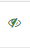
Apply Redactions using the Redactions tool.
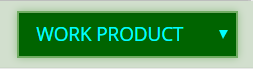
Use the Highlight tool to highlight relevant areas of the image.
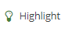
Use the Comment tool to add comments to the image.
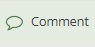
Displays the production-version of the document, if one exists. You can navigate through the pages of the document, zoom in and out, fit height and width and rotate the document both right and left. You can also print the document.
Displays a text-only rendering of the document. You can search the document for specific search term. You can also view persistent highlight for the document and print the document.
|
|
Tip: Your administrator may define one or more terms that are essential to your case. Persistently highlighted words can help you find needed information quickly.
|
Displays the metadata for the document. You can print the document, export it, or search the document metadata for specific terms.
Redactions obscure the content of image files so that only appropriate
information is visible in the files you prepare for discovery. In
If you have sufficient permissions, redact information in an image as follows:
For a selected document, in the Review pane’s Image tab, locate the information to be redacted.
Click  next to the Redaction button
and select the needed redaction from the Redaction Category menu,
as shown in this figure.
next to the Redaction button
and select the needed redaction from the Redaction Category menu,
as shown in this figure.

If needed, click the button again to activate the redaction action.
Point, click, and drag across the text or image area that is to be redacted..
When the selection is complete, release the mouse button. An example of redacted text is shown here:

Repeat these steps to apply other redactions.
When finished, click  or another button to stop the redaction activity.
or another button to stop the redaction activity.
For any or all redactions in the image, the text may be exposed by clicking  located to the right of the Redaction drop-down menu. When this icon is clicked, it changes to
located to the right of the Redaction drop-down menu. When this icon is clicked, it changes to  , Click again to hide the text. An example of exposed text behind a redaction is shown here:
, Click again to hide the text. An example of exposed text behind a redaction is shown here:

If you have sufficient permissions, change the size of a redaction as follows:
For a selected document, in the Review pane’s Image tab, locate a redaction to be resized.
Click the redaction to select it, then drag an edge or a corner to resize it.
Repeat these steps to resize additional redactions..
If you have sufficient permissions, move a redaction as follows:
For a selected document, in the Review pane’s the Image tab, locate a redaction to be moved.
Place the mouse pointer in the center of the redaction and drag it to the needed location, then release the mouse button.
Repeat these steps to move additional redactions.
|
|
Note: No warning message or Undo function exists when deleting redactions. Make sure of the selection before deleting. |
If you have sufficient permissions, delete redactions as follows:
For a selected document, in the Review pane’s Image tab, locate a redaction to be to be deleted.
On the Image
tab toolbar, click  .
.
Left-, then right-click the redaction and select Delete.
When finished, click
or another button to stop the redaction activity.
Your administrator may configure “persistent highlighting” to emphasize specific document content. Persistently highlighted key words can help you find needed information quickly. This highlighting appears in the Text and Web Viewer tabs.
. Note:
The group's related keywords highlight persistently within or batch.
Highlighting colors (font and background) are defined by your administrator.
The following example shows the persistent highlighted groups menu.
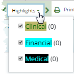
For example the previous figure shows three persistent highlighted group terms. For each group term, the administrator added related key words. For example, related key words for financial may include: returns, deficits, profits, losses, etc. If any of these key words appear in the document, they will be highlighted with the same background color and text color as shown in the menu. The number in the parenthesis next to the group term indicates the number of times any of the key words associated with that group term appear in the document. To view the related key words in the form of a tool tip, hover over the desired persistent highlighted group term with the mouse pointer. By default all persistent highlighting group terms are selected in the menu.
Click the Web Viewer tab or Text tab in the Review pane.
Click to display the persistent highlighted groups menu.
Click the arrows < > surrounding the Highlights menu to move backwards or forwards to locate each highlighted key word in the document. See
Click the Web Viewer tab or Text tab in the Review pane.
Click to display the persistent highlighted groups menu.
Clear the check box for one or more persistent highlighted groups. The related key words in the document are no longer highlighted.
To quickly search for terms in both the Web Viewer tab and the Text tab, follow these steps:
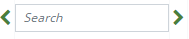
field . All instances of the search term are highlighted in yellow throughout the document. Click the Search arrows < >to move backwards or forwards to locate each highlighted term in the document. Clear the search box to remove the highlighted terms in the document.Mass Actions are actions performed on multiple documents at one time such as populating coding fields and/or applying tags. Existing permissions apply for mass actions. Mass actions are performed from any relationship menu except for Document History. See
From the Review pane, expand the desired relationship menu and pin it in place by clicking  .
.
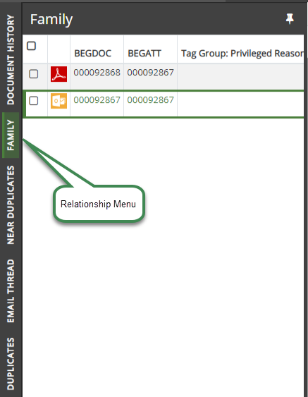
 button as shown in the following figure. All items are selected.
button as shown in the following figure. All items are selected.
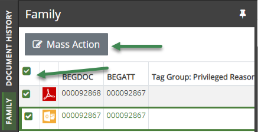
Clear items to be excluded for mass actions.
Clear the check box to the left of the field columns to clear all items in the menu.
Select individual items for mass actions.
to display the coding form/tag palette dialog as shown in the following figure.

Note: Coding form rules are not enforced when tags are applied in this manner.
Modify the coding form fields as needed.
Select the applicable tag group.
Add individual tags by moving the slider over to the right as shown in here:
Remove tags by moving the slider to the left as shown in here: 
Note: When the slider control is left in the center, the tag remains unchanged as shown here: 
 . The Mass Action dialog closes and applies the fields/tags to the selected documents. The previously selected documents in the selected Relationship menu revert to the default status; they are all cleared. The coding form/tag palette reflects the changes made in the Mass Actions dialog.
. The Mass Action dialog closes and applies the fields/tags to the selected documents. The previously selected documents in the selected Relationship menu revert to the default status; they are all cleared. The coding form/tag palette reflects the changes made in the Mass Actions dialog.Note: A prompt may appear if invalid characters and/or formats are entered in the coding form or if the number of characters exceed the amount allowed for a field.
Your administrator may define specific rules that will apply to your review procedures when you use a specific coding form. For example, a rule may be defined to require that a specific field cannot be empty. Field based rules such as this must be followed in order for changed in the Review pane to be saved.
In the coding form located on the right side above the tag palette, do any of the following:
Double-click in the field to be edited and make required changes. Messages will appear if validation fails for the field. Some fields may display gray text to assist with formatting entries, such as the Coding Date field.
For Hyperlink fields, enter or edit the linked file’s complete path. The entry should be a single file path in UNC format (for example, \\server001\files\smith01.msg). To view a linked file, click .
For Pick Lists, click to display the list. Click the desired item. To search for an item in the list, enter the search term. Values may be entered directly into the field that are not included in the pick list. However, these values will not be added to the pick list. The
Text may be selected from a field, copied and pasted into another field by using Ctrl+C to copy and Ctrl+V to paste.
To delete text, select the text and press the Delete key on the keyboard.
One of the primary activities when preparing documents for discovery is applying tags. A tag is a type of "marker" that allows you to categorize and identify specific document characteristics. Typically defined by your administrator, tags allow you and your organization to find and identify similar documents = for example, those that are privileged in some way, or those needing review by a topic expert.
In the tag palettelocated on the right side below the coding form, do any of the following:
Select the applicable tag or tags. Multiple tags may be selected for a group that is not exclusive. Only one tag may be selected in an exclusive group.
For tag groups, expand the tag group by clicking to see the tags. Select the applicable tag or tags. Click to collapse the tag group.
Select required tag or tags as defined by your administrator.
The final step is to set the review status
Set a Review Status for the document: Not Reviewed (default), Reviewed, or On Hold.
 :
:Click to clear the changes.
Click to go to previous document and save the changes.
Click to go to next document and save the changes.
Click to save the changes and remain on the document.
Note: To move to the first document in the batch, click .
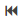
. To move to the last document in the batch click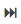
.When a review pass/batch is completed, a prompt appears stating: Navigating to the next document will load a new set of documents and navigating back to this current set will no longer be available. Do you wish to continue? Click Yes to continue. or Cancel to remain with the current document set